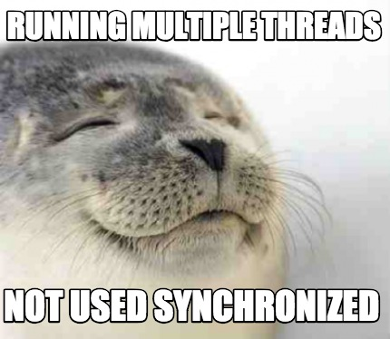
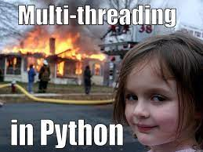
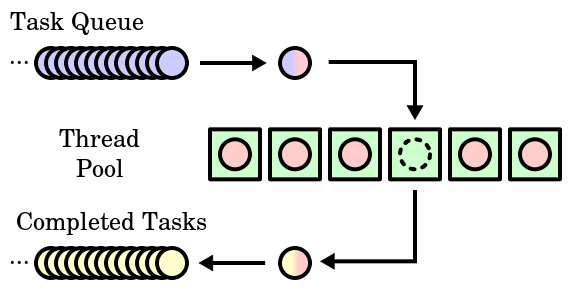
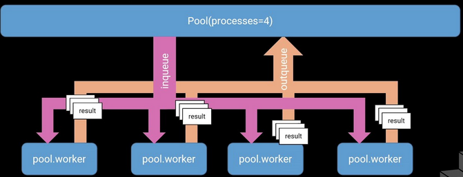
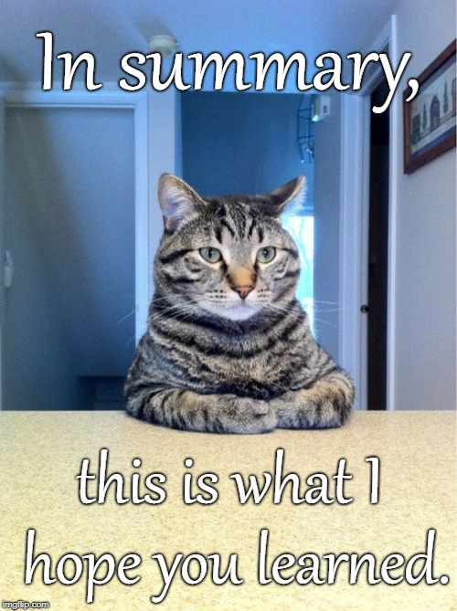

Przetwarzanie równoległe i strumieniowe
Wykład 5
Thread Pool i Executory w Pythonie: pule wątków i procesów


Plan wykładu
Timer: funkcja z opóźnieniem
ThreadPoolExecutor, Future, map / as_completed / wait, wyjątki, initializer, shutdown
zakleszczenie zadań zagnieżdżonych, backpressure: ograniczone okno zadań
ProcessPoolExecutor, pickle, chunksize, strażnik __main__, multiprocessing.Pool
Queue, shared_memory, Manager
symulacja GIL, Python bez GIL, potok I/O + CPU, scikit-learn n_jobs
Po co pule?
Wykład 3: wątek na każde zadanie, wynik i wyjątek przekazywane ręcznie.
Dziś: stała grupa robotników sama rozdziela zadania i oddaje wyniki oraz wyjątki. Zamiana wątków na procesy to zmiana jednej klasy.
Więcej mechanizmów synchronizacji
https://www.memecreator.com/meme/running-multiple-threads-not-used-synchronized/

Timer: funkcja z opóźnieniem
import threading
import time
def przypomnij(kto):
czas = time.perf_counter() - t0
print(f"{czas:.1f} s: {kto}, czas minął!")
t0 = time.perf_counter()
t = threading.Timer(2.0, przypomnij, args=("Ala",))
t.start() # wątek: najpierw czeka 2 s
anulowany = threading.Timer(1.0, przypomnij, args=("Ola",))
anulowany.start()
anulowany.cancel() # przed upływem 1 s
print("main: koniec kodu, ale program czeka na timer")
main: koniec kodu, ale program czeka na timer 2.0 s: Ala, czas minął!
Timerto podklasaThread:start(),join(),namejak w wątku.- Nie jest demonem: program czeka na timer.
W środku jest Event z wykładu 3:
# Lib/threading.py (Python 3.13)
def run(self):
self.finished.wait(self.interval) # Event.wait z limitem czasu
if not self.finished.is_set():
self.function(*self.args, **self.kwargs)
self.finished.set()
def cancel(self):
"""Stop the timer if it hasn't finished yet."""
self.finished.set()
cancel() działa tylko przed upływem czasu. interval to opóźnienie minimalne, nie dokładne.
Thread pool
http://www.quickmeme.com/p/3w52bp

Pula wątków: idea
- Wątek na zadanie: koszt startu przy każdym zadaniu, a liczba wątków rośnie z liczbą zadań.
- Pula: robotnicy startują raz i biorą kolejne zadania z kolejki.
- Liczbę robotników ustalamy sami (
max_workers), niezależnie od liczby zadań.
Analogia: kasy w sklepie. Stała liczba kasjerów i kolejka klientów, a nie nowy kasjer dla każdego klienta.
Po co pula wątków?
- Pula to producent-konsument z wykładu 3: kolejka zadań i stała grupa robotników, gotowa i z obsługą wyników.

https://pl.wikipedia.org/wiki/Plik:Thread_pool.svg
import threading
import time
from concurrent.futures import ThreadPoolExecutor
def zadanie(x):
return x * x
N = 10_000
start = time.perf_counter()
for i in range(N): # nowy wątek na każde zadanie
t = threading.Thread(target=zadanie, args=(i,))
t.start()
t.join()
print(f"wątek na zadanie: {time.perf_counter() - start:.2f} s")
start = time.perf_counter()
with ThreadPoolExecutor(max_workers=4) as ex: # 4 wątki
list(ex.map(zadanie, range(N)))
print(f"pula 4 wątków: {time.perf_counter() - start:.2f} s")
wątek na zadanie: 0.81 s pula 4 wątków: 0.12 s
Czasy zależą od sprzętu (tu Intel i7-8750H, Python 3.13).
concurrent.futures: Executor
| Klasa (Executor) | Robotnicy | Do czego |
|---|---|---|
ThreadPoolExecutor | wątki jednego procesu | I/O-bound: sieć, pliki, bazy |
ProcessPoolExecutor | procesy, każdy z własnym GIL | CPU-bound w czystym Pythonie |
InterpreterPoolExecutor (3.14) | podinterpretery jednego procesu, każdy z własnym GIL | CPU-bound bez kosztu procesów |
| Metoda / funkcja | Działanie |
|---|---|
ex.submit(fn, *args, **kwargs) | jedno zadanie; od razu zwraca Future |
ex.map(fn, *iterables, timeout=None, chunksize=1) | wiele zadań; wyniki w kolejności wejścia |
ex.shutdown(wait=True, cancel_futures=False) | zamyka pulę (with robi to sam) |
as_completed(fs), wait(fs, return_when=...) | czekanie na grupę obiektów Future |
Ten sam kod działa na wątkach i procesach: wystarczy zmienić klasę.
ThreadPoolExecutor: pierwszy przykład
import time
from concurrent.futures import ThreadPoolExecutor
def pobierz(url):
time.sleep(1) # udaje czekanie na sieć
return f"treść {url}"
urls = [f"https://example.com/{i}" for i in range(10)]
start = time.perf_counter()
with ThreadPoolExecutor(max_workers=5) as ex:
f = ex.submit(pobierz, urls[0]) # jedno zadanie -> Future
print(f)
print(f.result()) # czeka na wynik (1 s)
wyniki = list(ex.map(pobierz, urls)) # 10 zadań: 2 s
print(wyniki[:2])
print(f"razem {time.perf_counter() - start:.2f} s")
<Future at 0x7fe79a19aba0 state=running> treść https://example.com/0 ['treść https://example.com/0', 'treść https://example.com/1'] razem 3.01 s
submit()nie czeka: od razu zwracaFuture.result()czeka i zwraca wartość zreturn. W wątku z wykładu 3 ta wartość przepadała.- 10 zadań po 1 s na 5 robotnikach: 2 s (plus 1 s pierwszego zadania).
- Koniec bloku
with=shutdown(wait=True).
Wywołanie asynchroniczne: idea
- Synchronicznie: wywołanie wraca dopiero z wynikiem, wywołujący w tym czasie stoi.
- Asynchronicznie: wywołanie wraca od razu z kontraktem na przyszły wynik, a zadanie liczy robotnik w puli.
- Wywołujący robi w tym czasie coś innego i odbiera wynik, gdy go potrzebuje.
Zysk jest tylko wtedy, gdy jest „inna praca”. Odbiór wyniku zaraz po zleceniu to znowu wywołanie synchroniczne.
Analogia: pralnia. Oddajesz rzeczy i dostajesz kwit, czyli kontrakt na odbiór. Wracasz później; jeśli jeszcze nie gotowe, czekasz przy ladzie.
Future: wynik, który dopiero będzie
Future to wynik zadania, które mogło się jeszcze nie skończyć. Jego stany:
result(timeout=None) | czeka; zwraca wynik albo rzuca wyjątek zadania (po timeout: TimeoutError) |
exception(timeout=None) | zwraca wyjątek zadania (albo None) zamiast go rzucać |
done(), running(), cancelled(), cancel() | stan bez czekania; anulowanie zadania z kolejki |
add_done_callback(fn) | fn(future) po zakończeniu, w wątku puli procesu głównego |
Wyjątki w zadaniach
from concurrent.futures import ThreadPoolExecutor
def odwrotnosc(x):
return 1 / x
with ThreadPoolExecutor() as ex:
f = ex.submit(odwrotnosc, 0)
print(repr(f.exception())) # wyjątek jako obiekt
try:
f.result() # rzuca ten sam wyjątek
except ZeroDivisionError as e:
print("złapany:", e)
ex.submit(odwrotnosc, 0) # nikt nie zapyta o wynik...
print("koniec") # ...i błąd znika bez śladu
ZeroDivisionError('division by zero')
złapany: division by zero
koniec
Nieodebrany Future = połknięty błąd. Wątek z wykładu 3 wypisywał przynajmniej traceback.
from concurrent.futures import ThreadPoolExecutor
def odwrotnosc(x):
return 1 / x
with ThreadPoolExecutor() as ex:
for wynik in ex.map(odwrotnosc, [1, 2, 0, 4]):
print(wynik)
1.0
0.5
Traceback (most recent call last):
File "map_wyjatek.py", line 7, in <module>
for wynik in ex.map(odwrotnosc, [1, 2, 0, 4]):
...
File "map_wyjatek.py", line 4, in odwrotnosc
return 1 / x
ZeroDivisionError: division by zero
map rzuca wyjątek przy wadliwym wyniku: pętla się przerywa, wynik dla 4 przepada.
Z procesu wyjątek wraca przez pickle, z tracebackiem dziecka jako przyczyną (_RemoteTraceback).
Kolejność wyników: idea
map: kolejność wejścia. Szybki wynik czeka na wolniejsze przed nim.as_completed: kolejność ukończenia. Wynik od razu, gdy gotowy.- Całość trwa tyle samo; różni się chwila, w której można zacząć używać wyników.
Kolejność wyników: map czy as_completed?
import time
from concurrent.futures import ThreadPoolExecutor, as_completed
def zadanie(n):
time.sleep(n / 10) # zadanie n trwa n/10 s
return n
def czas():
return f"{time.perf_counter() - t0:.1f} s"
czasy = [3, 1, 4, 2]
with ThreadPoolExecutor(max_workers=4) as ex:
t0 = time.perf_counter()
for wynik in ex.map(zadanie, czasy):
print("map ", wynik, czas())
t0 = time.perf_counter()
futures = [ex.submit(zadanie, n) for n in czasy]
for f in as_completed(futures):
print("as_completed", f.result(), czas())
map 3 0.3 s map 1 0.3 s map 4 0.4 s map 2 0.4 s as_completed 1 0.1 s as_completed 2 0.2 s as_completed 3 0.3 s as_completed 4 0.4 s
- Wynik jak na rysunku: pierwszy wynik po 0.3 s z
map, po 0.1 s zas_completed. - Argument zadania odzyskujemy ze słownika
{future: argument}.
Symulacja: pula robotników
„Z3 1 s”: zadanie nr 3 trwa 1 s. Wiersze wyników: kiedy wynik dostaje wywołujący; szary wynik czekał na wcześniejsze. Procesy: każda paczka (chunk) to 0.3 s na przesłanie i pickle (szare pole). ThreadPoolExecutor ignoruje chunksize.
wait(): idea
wait()wraca z dwoma zbiorami:(gotowe, w_toku).return_whenmówi, kiedy wrócić;timeoutto najpóźniejsza chwila.- Zastosowanie: pierwsza odpowiedź wygrywa, reszta przestaje nas obchodzić.
Zadań z w_toku nie da się zatrzymać: cancel() działa tylko na te z kolejki.
wait(): pierwszy wynik i limit czasu
import random
import time
from concurrent.futures import (ThreadPoolExecutor, wait,
FIRST_COMPLETED)
def zapytaj(serwer):
time.sleep(random.uniform(0.1, 1.0)) # różny czas
return serwer
with ThreadPoolExecutor() as ex:
fs = [ex.submit(zapytaj, s) for s in ("A", "B", "C")]
gotowe, w_toku = wait(fs, timeout=2,
return_when=FIRST_COMPLETED)
print("pierwszy odpowiedział:", gotowe.pop().result())
print("w toku:", len(w_toku))
print("cancel():", [f.cancel() for f in w_toku])
pierwszy odpowiedział: B w toku: 2 cancel(): [False, False]
Zwycięzca jest losowy (w trzech uruchomieniach: B, A, C).
- Tu
FIRST_COMPLETEDitimeout=2: wraca po pierwszej odpowiedzi, najpóźniej po 2 s. cancel()→Falsedla pozostałych: już działają.
Ile robotników? max_workers
| Pula | Domyślne max_workers (3.13) | Na tym komputerze |
|---|---|---|
ThreadPoolExecutor | min(32, cpu + 4) | 16 |
ProcessPoolExecutor | cpu (Windows: najwyżej 61) | 12 |
multiprocessing.Pool | cpu | 12 |
cpu = os.process_cpu_count() (nowość 3.13): rdzenie dostępne dla procesu; os.cpu_count() liczy wszystkie.
- I/O-bound: robotników może być więcej niż rdzeni. Ogranicza nas serwer, limit API, liczba połączeń.
- CPU-bound: tyle, ile rdzeni fizycznych. Tu 12 logicznych = 6 fizycznych z hyper-threadingiem.
Stan robotnika: idea
- Połączenie z bazą lub sesja HTTP: drogie w tworzeniu i często nie dla wielu wątków.
initializer: funkcja wywołana raz w każdym robotniku, przed pierwszym zadaniem.threading.local(): jedna nazwa, osobna wartość w każdym wątku.
Stan robotnika: initializer i threading.local
import os, sqlite3, tempfile, threading
from concurrent.futures import ThreadPoolExecutor
baza = os.path.join(tempfile.mkdtemp(), "dane.db")
with sqlite3.connect(baza) as c:
c.execute("CREATE TABLE t (x INTEGER)")
c.executemany("INSERT INTO t VALUES (?)", [(i,) for i in range(100)])
SQL = "SELECT sum(x) FROM t WHERE x % 4 = ?"
wspolne = sqlite3.connect(baza) # połączenie wątku głównego
lokalne = threading.local()
def polacz(): # initializer: raz na robotnika
lokalne.conn = sqlite3.connect(baza)
print("nowe połączenie:", threading.current_thread().name)
def suma_wspolne(k):
return wspolne.execute(SQL, (k,)).fetchone()[0]
def suma_lokalne(k):
return lokalne.conn.execute(SQL, (k,)).fetchone()[0]
with ThreadPoolExecutor(2) as ex:
print("błąd:", ex.submit(suma_wspolne, 0).exception())
with ThreadPoolExecutor(2, initializer=polacz) as ex:
print(list(ex.map(suma_lokalne, range(4))))
błąd: SQLite objects created in a thread can only be used in that same thread. The object was created in thread id 139828332477376 and this is thread id 139828308678336. nowe połączenie: ThreadPoolExecutor-1_0 nowe połączenie: ThreadPoolExecutor-1_1 [1200, 1225, 1250, 1275]
- Pierwsza pula: połączenie z wątku głównego, błąd sqlite3.
- Druga:
initializerotwiera połączenie w każdym z 2 robotników; 4 zadania, 2 połączenia. - W
ProcessPoolExecutorwystarczy zmienna globalna: każdy proces ma własną.
Zamykanie puli: idea
shutdown(): pula nie przyjmuje nowych zadań.wait=True: wywołujący czeka, aż działające zadania się skończą.cancel_futures=True: zadania z kolejki są anulowane; działających nic nie przerywa.
Zamykanie puli: shutdown i with
import time
from concurrent.futures import ThreadPoolExecutor
def praca(i):
time.sleep(0.5)
return i
ex = ThreadPoolExecutor(max_workers=2)
fs = [ex.submit(praca, i) for i in range(6)]
time.sleep(0.1) # zadania 0 i 1 już działają
ex.shutdown(wait=True, cancel_futures=True)
print([f.result() if not f.cancelled() else "anulowane"
for f in fs])
ex.submit(praca, 6)
[0, 1, 'anulowane', 'anulowane', 'anulowane', 'anulowane'] Traceback (most recent call last): ... RuntimeError: cannot schedule new futures after shutdown
- Działające Z0 i Z1 dobiegły końca, cztery z kolejki anulowane.
withwywołujeshutdown(wait=True), także po wyjątku.- 3.14:
terminate_workers(),kill_workers()przerywają działające procesy.
Sprawdź się
Zadanie z ex.submit(g) rzuciło ValueError, ale nikt nie wywołał result(). Co zobaczymy?
Wyjątek czeka w Future i pojawia się dopiero przy result().
max_workers=2, wysłano 6 zadań po 1 s. Po 0.5 s wywołujemy cancel() na wszystkich. Ile zadań zostanie anulowanych?
Dwa działają (RUNNING), więc cancel() zwraca dla nich False. Cztery z kolejki (PENDING) da się anulować.
f(x) śpi x sekund. Kiedy for r in ex.map(f, [3, 1, 2]) dostanie pierwszy wynik (3 robotników)?
map oddaje wyniki w kolejności wejścia, a pierwsze zadanie trwa 3 s. Z as_completed: po 1 s.
Zadania zagnieżdżone: idea
- Zadanie w puli zleca podzadania tej samej puli i czeka na ich kontrakty.
- Czekając, nadal zajmuje robotnika.
- Gdy wszyscy robotnicy czekają, podzadań nie ma kto wykonać: zakleszczenie.
Pułapka: zadania zagnieżdżone
import time
from concurrent.futures import ThreadPoolExecutor
ex = ThreadPoolExecutor(max_workers=2)
def czesc(i):
time.sleep(0.1)
return i
def zadanie(n): # zleca podzadania tej samej puli
fs = [ex.submit(czesc, i) for i in range(n)]
return sum(f.result() for f in fs) # czeka, zajmując robotnika
zewnetrzne = [ex.submit(zadanie, 3) for _ in range(2)]
try:
print([f.result(timeout=3) for f in zewnetrzne])
except TimeoutError:
print("po 3 s brak wyniku; running():",
[f.running() for f in zewnetrzne])
ex.shutdown(wait=False, cancel_futures=True) # inaczej nie wyjdzie
print([type(f.exception()).__name__ for f in zewnetrzne])
po 3 s brak wyniku; running(): [True, True] ['CancelledError', 'CancelledError']
Bez limitu czasu result() czekałby wiecznie, a program nie zakończyłby się nigdy.
- Kod z rysunku: po 3 s oba zadania nadal
running(), a podzadania nawet nie ruszyły.
Dla 3 lub 4 robotników ten kod działa. Wynik zależy od liczby robotników i zadań, więc testy łatwo to przeoczą.
Zadania zagnieżdżone: poprawki
import time
from concurrent.futures import ThreadPoolExecutor
def czesc(i):
time.sleep(0.1)
return i
# 1. podzadania zleca wywołujący, a nie zadanie w puli
start = time.perf_counter()
with ThreadPoolExecutor(max_workers=2) as ex:
grupy = [[ex.submit(czesc, i) for i in range(3)] for _ in range(2)]
print([sum(f.result() for f in g) for g in grupy],
f"{time.perf_counter() - start:.1f} s")
# 2. osobna pula na podzadania
start = time.perf_counter()
with ThreadPoolExecutor(2) as zewn, ThreadPoolExecutor(4) as wewn:
def zadanie(n):
fs = [wewn.submit(czesc, i) for i in range(n)]
return sum(f.result() for f in fs)
print([f.result() for f in [zewn.submit(zadanie, 3) for _ in range(2)]],
f"{time.perf_counter() - start:.1f} s")
[3, 3] 0.3 s [3, 3] 0.2 s
- Nie czekaj wewnątrz puli: podzadania zleca wywołujący, zadania tylko liczą.
- Osobna pula na podzadania: czekający robotnik nie blokuje tych, na których czeka.
- Albo przebuduj zadanie tak, by nie potrzebowało innych zadań (jedna większa funkcja).
Symulacja: zakleszczenie puli
Z1, Z2 zlecają po 3 podzadania (p1.1…) i czekają na nie. Podzadanie trwa jeden krok. R: robotnicy puli, P: robotnicy osobnej puli.
Backpressure: idea
submit()nie czeka: kolejka puli nie ma limitu.- Producent szybszy od robotników: kolejka rośnie, aż skończy się pamięć.
- Backpressure: wolny odbiorca hamuje producenta. Okno = bufor ograniczony z wykładu 3.
Analogia: taśma przy kasie. Gdy jest pełna, klient czeka z wykładaniem zakupów.
Backpressure: wszystko naraz do kolejki
import resource
import time
from concurrent.futures import ThreadPoolExecutor
def praca(x):
time.sleep(0.001)
return x
def pamiec_mb(): # szczyt pamięci procesu (Linux)
return resource.getrusage(resource.RUSAGE_SELF).ru_maxrss / 1024
print(f"pamięć na starcie: {pamiec_mb():.0f} MB")
with ThreadPoolExecutor(max_workers=4) as ex:
start = time.perf_counter()
fs = [ex.submit(praca, i) for i in range(200_000)]
print(f"pętla submit: {time.perf_counter() - start:.2f} s")
print("gotowe:", sum(f.done() for f in fs), "z", len(fs))
print(f"pamięć po pętli: {pamiec_mb():.0f} MB")
ex.shutdown(cancel_futures=True) # nie czekaj ~50 s
pamięć na starcie: 16 MB pętla submit: 2.11 s gotowe: 772 z 200000 pamięć po pętli: 390 MB
- Pętla trwa 2 s, a robotnicy zdążyli z 0,4% zadań.
- Reszta to 200 000 obiektów
Futurew pamięci: ok. 1,9 kB na zadanie. - Przy nieskończonym strumieniu danych skończy się pamięć.
Executor.map czyta całe wejście
import sys
import time
from concurrent.futures import ThreadPoolExecutor
def praca(x):
time.sleep(0.1)
return x
def dane(): # np. wiersze dużego pliku
for i in range(4):
print(" czytam", i)
yield i
with ThreadPoolExecutor(max_workers=2) as ex:
if sys.version_info >= (3, 14):
wyniki = ex.map(praca, dane(), buffersize=2) # 3.14+
else:
wyniki = ex.map(praca, dane())
print("map zwróciło iterator")
for w in wyniki:
print("wynik", w)
Python 3.13
czytam 0 czytam 1 czytam 2 czytam 3 map zwróciło iterator wynik 0 wynik 1 wynik 2 wynik 3
Python 3.14, buffersize=2
czytam 0 czytam 1 map zwróciło iterator czytam 2 wynik 0 czytam 3 wynik 1 wynik 2 wynik 3
- Do 3.13
mapwysyła wszystkie zadania, zanim odda iterator: generator czytany do końca. - 3.14:
buffersize=ntrzyma najwyżejnzadań w toku. Następne czyta dopiero po odebraniu wyniku.
Ograniczone okno zadań
import resource
import time
from concurrent.futures import ThreadPoolExecutor, wait, FIRST_COMPLETED
def praca(x):
time.sleep(0.001)
return x
def z_oknem(ex, fn, dane, okno): # najwyżej `okno` zadań naraz
w_toku = set()
for x in dane:
if len(w_toku) >= okno: # pełne okno: czekaj na jedno
gotowe, w_toku = wait(w_toku, return_when=FIRST_COMPLETED)
yield from (f.result() for f in gotowe)
w_toku.add(ex.submit(fn, x))
yield from (f.result() for f in wait(w_toku).done)
with ThreadPoolExecutor(max_workers=4) as ex:
start = time.perf_counter()
suma = sum(z_oknem(ex, praca, range(8_000), okno=16))
print(f"suma {suma}, {time.perf_counter() - start:.1f} s")
mb = resource.getrusage(resource.RUSAGE_SELF).ru_maxrss / 1024
print(f"szczyt pamięci: {mb:.0f} MB")
suma 31996000, 2.3 s szczyt pamięci: 16 MB
- Najwyżej
oknozadań w puli naraz. Pełne okno:wait(FIRST_COMPLETED)czeka na jedno z nich. - Pamięć nie rośnie z liczbą zadań (szczyt 16 MB). Czas bliski minimum: 8000 × 1 ms / 4 robotników = 2 s.
- Wyniki wychodzą na bieżąco (generator), w kolejności ukończenia.
- Inaczej:
BoundedSemaphore(okno):acquire()przedsubmit,release()wadd_done_callback.
Symulacja: kolejka bez limitu i z oknem
Długość kolejki w kolejnych krokach. 120 zadań, 2 robotników, każdy kończy 1 zadanie na krok.
Sprawdź się: pułapki puli
Czy kod ze slajdu „Pułapka: zadania zagnieżdżone” zawiesi się przy max_workers=4 (2 zadania po 3 podzadania)?
Dwaj robotnicy czekają, dwaj wolni wykonają 6 podzadań. Sprawdzone: wynik [3, 3]. Przy 2 robotnikach zawiesza się zawsze.
max_workers=4. Ile zadań czeka w kolejce zaraz po pętli for i in range(1000): ex.submit(time.sleep, 1)?
Pętla nie czeka. Czterej robotnicy wzięli po zadaniu, 996 czeka (sprawdzone w 3.13).
Python 3.13: for w in ex.map(f, open("duzy.csv")). Kiedy plik zostanie przeczytany?
Do 3.13 map wysyła od razu wszystkie zadania. Ratunek: okno zadań albo buffersize w 3.14.
Pula procesów: idea
- Wątki: wspólna pamięć, ale jeden GIL. Obliczenia w Pythonie idą na zmianę.
- Procesy: własna pamięć i własny GIL. Obliczenia idą naprawdę równolegle.
- Cena: start procesów i kopiowanie danych tam i z powrotem.
ProcessPoolExecutor: obliczenia CPU
import time
from concurrent.futures import ThreadPoolExecutor, ProcessPoolExecutor
def pierwsze(n): # liczby pierwsze < n, czysty Python
return sum(all(k % d for d in range(2, int(k**0.5) + 1))
for k in range(2, n))
if __name__ == "__main__":
zadania = [100_000] * 8
start = time.perf_counter()
wyniki = list(map(pierwsze, zadania))
print(f"sekwencyjnie {time.perf_counter() - start:.2f} s")
for Executor in (ThreadPoolExecutor, ProcessPoolExecutor):
start = time.perf_counter()
with Executor(max_workers=4) as ex:
assert list(ex.map(pierwsze, zadania)) == wyniki
czas = time.perf_counter() - start
print(f"{Executor.__name__} {czas:.2f} s")
sekwencyjnie 1.52 s ThreadPoolExecutor 1.49 s ProcessPoolExecutor 0.65 s
Czasy zmieniają się między uruchomieniami i zależą od sprzętu (i7-8750H: 6 rdzeni, 12 wątków sprzętowych).
- Ten sam kod, inna klasa puli.
- Wątki: bez zysku (jeden GIL).
- Procesy: ok. 2 razy szybciej, nie 4: koszt startu i przesyłania, a zegar laptopa zwalnia przy wielu rdzeniach.
- Wymagane: funkcja na poziomie modułu i pula pod
if __name__ == "__main__":. Dlaczego? Za chwilę.
Wątki czy procesy? Pomiary
24 zadania: pierwsze(100_000) (ok. 0.18 s) albo time.sleep(0.1); najlepszy z 2 pomiarów. Python 3.13, i7-8750H (6 rdzeni, 12 wątków sprzętowych). Na innym komputerze liczby będą inne, kształt podobny.
Jak zadanie trafia do procesu?
import pickle
def kwadrat(x):
return x * x
print(pickle.dumps(kwadrat, protocol=0)) # protokół tekstowy
b'c__main__\nkwadrat\np0\n.'
Protokół 0 jest tekstowy. Pule używają binarnego, ale funkcję zapisują tak samo: moduł i nazwa.
- Procesy nie współdzielą pamięci: funkcja, argumenty i wynik idą przez pickle (serializację do bajtów) i potok.
- Funkcja jest zapisana przez nazwę, nie przez kod. Robotnik musi ją znaleźć u siebie.
Czego nie da się wysłać do procesu?
from concurrent.futures import ProcessPoolExecutor
def kwadrat(x):
return x * x
if __name__ == "__main__":
with ProcessPoolExecutor() as ex:
print(list(ex.map(kwadrat, range(5))))
print(list(ex.map(lambda x: x * x, range(5))))
[0, 1, 4, 9, 16] concurrent.futures.process._RemoteTraceback: ... _pickle.PicklingError: Can't pickle <function <lambda> at 0x7f99d4ef8c20>: attribute lookup <lambda> on __main__ failed
lambda ani funkcja zagnieżdżona nie mają nazwy w module, więc pickle ich nie zapisze. dill i cloudpickle (używane przez pathos, joblib) zapisują kod funkcji, ale wolniej.
Co można przekazać do ProcessPoolExecutor.submit (jako funkcję lub argument)? (zaznacz wszystkie)
Sprawdzone przez pickle.dumps (3.13). Plik, blokada i generator mają stan związany z procesem (deskryptor, blokada systemowa, ramka wykonania), więc pickle je odrzuca.
chunksize: idea
- Każde przesłanie do procesu kosztuje: pickle, potok, odbiór.
- Paczka (
chunksize): jeden komunikat na wiele zadań. - Za duże paczki: gorszy podział pracy, gdy zadania są nierówne.
Koszt komunikacji: chunksize
import time
from concurrent.futures import ProcessPoolExecutor
def kwadrat(x): # trwa ułamek mikrosekundy
return x * x
if __name__ == "__main__":
dane = range(20_000)
start = time.perf_counter()
sum(map(kwadrat, dane))
print(f"sekwencyjnie {time.perf_counter() - start:.3f} s")
with ProcessPoolExecutor(max_workers=4) as ex:
for cs in (1, 100, 5_000):
start = time.perf_counter()
sum(ex.map(kwadrat, dane, chunksize=cs))
czas = time.perf_counter() - start
print(f"chunksize={cs:<5} {czas:.3f} s")
sekwencyjnie 0.002 s chunksize=1 2.869 s chunksize=100 0.051 s chunksize=5000 0.009 s
Czasy zależą od sprzętu; proporcje są podobne na każdym komputerze.
- Domyślnie:
ProcessPoolExecutor.map1,Pool.mapok.len / (4 · procesy).ThreadPoolExecutorignorujechunksize. - Zadanie powinno trwać co najmniej milisekundy, a dane być małe (indeks, nazwa pliku).
Strażnik __main__: idea
- Robotnik musi znaleźć funkcję po nazwie, więc importuje moduł główny (spawn, forkserver).
- Import wykonuje cały kod modułu, także tworzenie puli.
- W robotniku
__name__to"__mp_main__": strażnik pomija blok.
if __name__ == "__main__" i metody startu
from concurrent.futures import ProcessPoolExecutor
def kwadrat(x):
return x * x
print("import modułu, __name__ =", __name__)
# brak if __name__ == "__main__":
with ProcessPoolExecutor(2) as ex:
print(list(ex.map(kwadrat, range(5))))
Python 3.14 na Linuksie (domyślnie forkserver):
import modułu, __name__ = __main__
import modułu, __name__ = __mp_main__
Traceback (most recent call last):
...
RuntimeError:
An attempt has been made to start a new process before the
current process has finished its bootstrapping phase.
...
Ten sam plik w Pythonie 3.13 na Linuksie (fork) wypisuje [0, 1, 4, 9, 16].
- Domyślnie: Windows i macOS
spawn, Linuxforkdo 3.13,forkserverod 3.14. Kod bez strażnika po aktualizacji przestaje działać. - Wybór jawny:
mp_context=mp.get_context("spawn")albomp.set_start_method()(wykład 4).
Jupyter: przy spawn i forkserver robotnik nie widzi funkcji z notatnika. Rozwiązanie: funkcje w pliku .py i import.
AttributeError: module '__main__' has no attribute 'kwadrat' ... concurrent.futures.process.BrokenProcessPool: A process in the process pool was terminated abruptly while the future was running or pending.
multiprocessing.Pool

Zadania idą do robotników kolejką inqueue, wyniki wracają kolejką outqueue.
Pool(processes=None): domyślnieos.process_cpu_count()procesów.multiprocessing.pool.ThreadPool: to samo API na wątkach.
| blokujące | asynchroniczne | |
|---|---|---|
| jedno wywołanie | apply(f, args) | apply_async(f, args, callback, error_callback) |
| wiele danych | map(f, it, chunksize), starmap | map_async, starmap_async |
| leniwy iterator | imap(f, it, chunksize=1), imap_unordered | (wyniki na bieżąco) |
starmap(f, [(1, 2), (3, 4)])wywołujef(1, 2),f(3, 4).close()+join(): koniec zadań i czekanie na robotników.terminate(): zabicie procesów.
with Pool() kończy się terminate(), nie close() + join(). Wyniki _async odbieramy wewnątrz bloku.
map_async i apply_async: AsyncResult
import multiprocessing as mp
def wielkie(s):
return s.upper()
if __name__ == "__main__":
dane = ["ala", "ma", "kota"]
with mp.Pool() as pool:
wynik = pool.map_async(wielkie, dane)
wynik.wait()
print(wynik) # obiekt AsyncResult!
print(wynik.get(timeout=5)) # wynik albo wyjątek
def pokaz(r): # lokalna funkcja: tu wolno
print("callback:", r)
a = pool.apply_async(pow, (2, 10), callback=pokaz)
print("apply_async:", a.get())
<multiprocessing.pool.MapResult object at 0x7f1f373f96a0> ['ALA', 'MA', 'KOTA'] callback: 1024 apply_async: 1024
_asyncod razu zwracaAsyncResult(jakFuture):wait(),ready(),get(timeout).wait()tylko czeka. Wynik (albo wyjątek zadania) dajeget(). Sam obiekt to adres w pamięci.callbackdziała w procesie głównym, więc nie musi dać się zapisać przez pickle. Ma być krótki: blokuje odbiór wyników.
Future a AsyncResult: dwa rodzaje kontraktu
- Future: kontrakt na każde zadanie. Wyniki na bieżąco, błąd psuje tylko swój kontrakt.
- map_async: jeden kontrakt na listę. Wszystko albo nic, po najwolniejszym zadaniu.
- Tylko Future da się anulować, gdy czeka w kolejce, i dopiąć mu callback w dowolnej chwili.
AsyncResultprzyjmuje callback tylko przy zleceniu.
Po get(timeout) leci multiprocessing.TimeoutError, a nie wbudowany TimeoutError: zwykłe except TimeoutError go nie złapie.
Co zwróci r.successful(), zanim zadanie się skończy?
successful() działa tylko po zakończeniu; wcześniej rzuca ValueError. Najpierw ready() albo wait().
Pool: map, imap czy imap_unordered?
import time
from multiprocessing import Pool
def zadanie(n):
time.sleep(n / 10) # zadanie n trwa n/10 s
return n
if __name__ == "__main__":
czasy = [3, 1, 4, 2]
with Pool(4) as pool:
for metoda in (pool.map, pool.imap, pool.imap_unordered):
t0 = time.perf_counter()
for wynik in metoda(zadanie, czasy):
czas = time.perf_counter() - t0
print(f"{metoda.__name__:15}{wynik} {czas:.1f} s")
imap*: domyślniechunksize=1; przy małych zadaniach ustaw większy.
map 3 0.4 s map 1 0.4 s map 4 0.4 s map 2 0.4 s imap 3 0.3 s imap 1 0.3 s imap 4 0.4 s imap 2 0.4 s imap_unordered 1 0.1 s imap_unordered 2 0.2 s imap_unordered 3 0.3 s imap_unordered 4 0.4 s
map: lista po zakończeniu wszystkich zadań; generator na wejściu zamienia na listę.imap: kolejność wejścia, wynik od razu, gdy gotowe są on i wcześniejsze.imap_unordered: kolejność ukończenia (jakas_completed).
Pool czy ProcessPoolExecutor?
multiprocessing.Pool | ProcessPoolExecutor | |
|---|---|---|
| API | map, imap, imap_unordered, starmap, apply, wersje _async | submit, map oraz as_completed, wait |
| wynik i błąd | AsyncResult.get() rzuca wyjątek; callback, error_callback | Future: result(), exception(), add_done_callback |
| anulowanie | brak dla pojedynczych zadań; terminate() zabija wszystko | cancel() zadań w kolejce, shutdown(cancel_futures=True) |
| robotnik zginie | pula tworzy nowy proces, ale wynik nie przyjdzie: get() bez timeout wisi | wszystkie zadania dostają BrokenProcessPool |
Awaria sprawdzona w 3.13 przez os._exit(1) w zadaniu. W nowym kodzie raczej concurrent.futures: jeden interfejs dla wątków, procesów i asyncio.
Pula: wiele niezależnych zadań, ta sama czysta funkcja (wykład 2), różne dane.
Osobny Process / Thread: zadanie działa cały czas (serwer, monitorowanie), ma stan albo czeka na inne zadania (zakleszczenie puli).
Dane między procesami: idea
- Kopia: proste i bezpieczne, ale kosztuje przy dużych danych.
- Wspólny blok: bez kopiowania, tylko bajty i tablice, synchronizacja po naszej stronie.
- Pośrednik: wygodne obiekty Pythona, ale każda operacja to komunikat.
Wymiana danych między procesami
| Mechanizm | Model z rysunku | Kiedy |
|---|---|---|
| argumenty i wyniki zadań | kopia | domyślnie; małe dane |
multiprocessing.Queue, Pipe | kopia | strumień komunikatów, producent-konsument |
Value, Array (wykład 4) | wspólny blok (z blokadą) | liczniki, małe tablice liczb |
shared_memory.SharedMemory | wspólny blok | duże tablice bez kopiowania |
Manager() | pośrednik | wspólny dict czy list; wygodny, ale wolny |
Najtańsza komunikacja to jej brak: każdy proces liczy swój fragment i zwraca mały wynik, scalamy na końcu (map/reduce, wykład 2).
multiprocessing.Queue
from multiprocessing import Process, Queue
def producent(q, n):
for i in range(n):
q.put(i * i) # trafia do bufora, nie do potoku
q.put(None) # znacznik końca danych
if __name__ == "__main__":
q = Queue()
p = Process(target=producent, args=(q, 100_000))
p.start()
p.join(timeout=3) # ŹLE: join przed odebraniem danych
print("producent żyje po 3 s?", p.is_alive())
wyniki = []
while (x := q.get()) is not None:
wyniki.append(x)
p.join() # dobrze: join po opróżnieniu kolejki
print(len(wyniki), wyniki[:5], p.is_alive())
producent żyje po 3 s? True 100000 [0, 1, 4, 9, 16] False
- Jak
queue.Queuez wykładu 3, ale między procesami. Bezshutdown(): koniec oznacza znacznikNone. put()wraca od razu. Wątek zasilający przepisuje dane do potoku o ograniczonej pojemności.- Proces kończy się dopiero po opróżnieniu bufora.
join()przedget(): dziecko czeka na odbiorcę, rodzic na dziecko, czyli zakleszczenie. - Zasada: najpierw
get(), potemjoin().
Pamięć współdzielona: shared_memory
import time
import numpy as np
from concurrent.futures import ProcessPoolExecutor
from multiprocessing.shared_memory import SharedMemory
N = 40_000_000 # 320 MB liczb float64
def suma_shm(nazwa, k): # dostaje tylko nazwę bloku
shm = SharedMemory(name=nazwa)
wynik = np.frombuffer(shm.buf)[k * N // 4:(k + 1) * N // 4].sum()
shm.close()
return wynik
if __name__ == "__main__":
shm = SharedMemory(create=True, size=N * 8)
a = np.frombuffer(shm.buf) # tablica na wspólnym bloku
a[:] = 1.0
with ProcessPoolExecutor(4) as ex:
t = time.perf_counter()
s1 = sum(ex.map(np.sum, np.array_split(a, 4))) # kopie
print(f"kopie (pickle): {time.perf_counter() - t:.2f} s")
t = time.perf_counter()
s2 = sum(ex.map(suma_shm, [shm.name] * 4, range(4)))
print(f"shared_memory: {time.perf_counter() - t:.2f} s")
print(s1, s2)
del a # widok usuń przed close()
shm.close()
shm.unlink() # usuń blok z systemu
kopie (pickle): 0.83 s shared_memory: 0.03 s 40000000.0 40000000.0
Czasy zależą od sprzętu.
SharedMemory(create=True, size=...): nazwany blok pamięci systemu; inne procesy podłączają się po nazwie.np.frombuffer(shm.buf): tablica na tych samych bajtach. Potokiem idzie nazwa, nie 320 MB.close()w każdym procesie,unlink()raz. Zapisy z wielu procesów synchronizujemy sami (Lock).- Tylko bajty i tablice; proste wartości:
ShareableList.
Manager: wspólne obiekty Pythona
from concurrent.futures import ProcessPoolExecutor
from multiprocessing import Manager
def licz(slowa, licznik, lock):
for s in slowa:
with lock: # odczyt + zapis = sekcja krytyczna
licznik[s] = licznik.get(s, 0) + 1
if __name__ == "__main__":
teksty = [["ala", "ma", "kota"], ["kot", "ma", "ale"],
["ala", "ma", "psa"]]
with Manager() as m: # osobny proces-serwer z obiektami
licznik, lock = m.dict(), m.Lock() # pośredniki (proxy)
with ProcessPoolExecutor() as ex:
for t in teksty:
ex.submit(licz, t, licznik, lock)
print(dict(licznik))
{'ala': 2, 'ma': 3, 'kot': 1, 'kota': 1, 'ale': 1, 'psa': 1}
Kolejność kluczy zmienia się między uruchomieniami.
To samo z multiprocessing.Lock() zamiast m.Lock():
RuntimeError: Lock objects should only be shared between processes through inheritance
Manager()uruchamia proces-serwer.m.dict(),m.Lock()to pośredniki: każda operacja to komunikat do serwera.- Pośrednik można przekazać jako argument zadania. Zwykłą blokadę procesy dostają tylko przy tworzeniu (dziedziczenie).
licznik.geti zapis to dwa komunikaty: bez blokady wyścig (wykład 4).
Szybciej: każde zadanie zwraca własny Counter, proces główny je sumuje. Bez blokad.
GIL: kiedy przeszkadza, a kiedy nie
- GIL: w jednym procesie CPython tylko jeden wątek naraz wykonuje bajtkod Pythona (wykład 3).
- Wątek oddaje GIL, gdy czeka na I/O, śpi albo liczy w kodzie C, który go zwalnia:
hashlib(dane powyżej 2 KB),zlib, większośćnumpy. - GIL przeszkadza więc tylko przy obliczeniach w czystym Pythonie.
- Bez GIL: Jython (tylko Python 2.7), IronPython. PyPy ma GIL; PyPy-STM porzucono.
import hashlib
import time
from concurrent.futures import ThreadPoolExecutor
dane = [bytes(50_000_000) for _ in range(8)] # 8 bloków po 50 MB
def skrot(blok): # liczone w C, GIL zwolniony
return hashlib.sha256(blok).hexdigest()
start = time.perf_counter()
list(map(skrot, dane))
print(f"sekwencyjnie: {time.perf_counter() - start:.2f} s")
start = time.perf_counter()
with ThreadPoolExecutor(max_workers=4) as ex:
list(ex.map(skrot, dane))
print(f"4 wątki: {time.perf_counter() - start:.2f} s")
sekwencyjnie: 0.92 s 4 wątki: 0.24 s
Czasy zależą od sprzętu.
Symulacja: kto ma GIL?
kolor wątku: kod Pythonaczeka na GILI/O (GIL oddany)kod C bez GIL
Model: wątek czekający dłużej niż sys.getswitchinterval() wymusza oddanie GIL; rdzeni jest dość dla wszystkich wątków.
GIL a wątek I/O: opóźnienie
import sys
import threading
import time
def io_watek(n=100): # 100 czekań na I/O po 1 ms
start = time.perf_counter()
for _ in range(n):
time.sleep(0.001) # GIL zwolniony na czas czekania
return time.perf_counter() - start
def licz(stop): # wątek CPU-bound w czystym Pythonie
while not stop.is_set():
sum(range(1000))
print("switch interval:", sys.getswitchinterval())
print(f"I/O sam: {io_watek():.2f} s")
stop = threading.Event()
t = threading.Thread(target=licz, args=(stop,))
t.start()
print(f"I/O obok CPU: {io_watek():.2f} s")
sys.setswitchinterval(0.0005) # przełączaj co 0,5 ms
print(f"I/O obok CPU, co 0.5 ms: {io_watek():.2f} s")
stop.set()
t.join()
switch interval: 0.005 I/O sam: 0.11 s I/O obok CPU: 0.62 s I/O obok CPU, co 0.5 ms: 0.17 s
- Sam wątek I/O: 100 × 1 ms ≈ 0.11 s.
- Obok wątku CPU-bound każde wybudzenie czeka na GIL do 5 ms: 100 × (1 + 5) ms ≈ 0.6 s.
- Krótszy
switchintervalzmniejsza opóźnienie, ale częstsze przełączanie spowalnia obliczenia.
Wątek I/O nie spowalnia obliczeń, ale obliczenia w czystym Pythonie spowalniają reakcję wątku I/O. Ciężkie obliczenia: do procesów.
Python bez GIL i wiele interpreterów
- Free-threaded CPython (PEP 703): osobna kompilacja
python3.13t,python3.14t. Wątki liczą naprawdę równolegle. - 3.13t: eksperymentalny, kod jednowątkowy wolniejszy o ok. 40%. 3.14t: oficjalnie wspierany (PEP 779), narzut ok. 5–10%. Domyślny
python3ma GIL. - Rozszerzenie C bez deklaracji obsługi włącza GIL z powrotem. Sprawdzenie:
sys._is_gil_enabled(). - Bez GIL wyścigi z wykładu 4 zdarzają się częściej.
import time
from concurrent import futures
def pierwsze(n):
return sum(all(k % d for d in range(2, int(k**0.5) + 1))
for k in range(2, n))
if __name__ == "__main__":
for Executor in (futures.ThreadPoolExecutor,
futures.InterpreterPoolExecutor,
futures.ProcessPoolExecutor):
start = time.perf_counter()
with Executor(max_workers=4) as ex:
list(ex.map(pierwsze, [100_000] * 8))
czas = time.perf_counter() - start
print(f"{Executor.__name__:24} {czas:.2f} s")
ThreadPoolExecutor 1.36 s InterpreterPoolExecutor 0.61 s ProcessPoolExecutor 0.62 s
Python 3.14 (z GIL). InterpreterPoolExecutor: robotnik to podinterpreter z własnym GIL w tym samym procesie (PEP 734). Obiektów nie współdzieli: proste wartości przechodzą bezpośrednio, reszta przez pickle.
Podsumowanie: wielowątkowość w Pythonie

https://imgflip.com/i/2fzsdw
Wielowątkowość: zalety i wady
Zalety
- Responsywność: długie zadanie w tle nie blokuje interfejsu.
- Czekanie na I/O nakłada się na pracę innych wątków.
- Obliczenia na wielu rdzeniach: w CPython z GIL tylko w kodzie C zwalniającym GIL albo w 3.14t.
- Naturalny model niektórych problemów (producent-konsument).
- Wspólna pamięć: dane bez kopiowania i pickle.
Wady
- Złożoność: wyścigi, zakleszczenia, zagłodzenie (wykład 4), trudne do odtworzenia.
- Narzut synchronizacji: blokady kosztują i ograniczają równoległość.
- Przełączanie kontekstu zużywa czas procesora.
- Rdzenie: więcej wątków niż rdzeni nie przyspiesza obliczeń.
- GIL: czysty Python w wątkach nie liczy równolegle.
Wątki, procesy czy asyncio?
| Zadanie | Narzędzie | Dlaczego |
|---|---|---|
I/O-bound, do kilkuset operacji, biblioteki blokujące (requests, sterowniki baz) | ThreadPoolExecutor | czekający wątek oddaje GIL |
| I/O-bound, tysiące jednoczesnych połączeń | asyncio | jeden wątek przełącza się w await; tańsze niż wątki |
| CPU-bound w czystym Pythonie | ProcessPoolExecutor, Pool | osobny GIL w każdym procesie; koszt: start i pickle |
| CPU-bound w numpy, hashlib, kodzie C | wątki albo nic | biblioteka zwalnia GIL lub sama liczy na wielu rdzeniach |
| CPU-bound, Python 3.14 | InterpreterPoolExecutor, python3.14t | wiele GIL w jednym procesie albo brak GIL |
| I/O i CPU w jednym zadaniu | potok: wątki + procesy | każdy krok w puli, która mu odpowiada (następne slajdy) |
Najpierw zmierz (time.perf_counter(), profiler). Lepszy algorytm albo numpy często daje więcej niż dodatkowe rdzenie.
Potok I/O + CPU: idea
- Krok I/O głównie czeka: wątki.
- Krok CPU liczy w Pythonie: procesy.
as_completedłączy kroki: plik idzie do analizy, gdy tylko jest gotowy.
Analogia: kuchnia. Kelnerzy (wątki) zbierają zamówienia, kucharze (procesy) gotują; nikt nie czeka, aż kelner obsłuży całą salę.
Potok I/O + CPU: kroki
Plik p01_kroki.py (osobny moduł: działa też z Jupytera):
import os
import time
def pobierz(sciezka): # I/O: opóźnienie sieci + odczyt pliku
time.sleep(0.2)
with open(sciezka, "rb") as f:
return f.read()
def analiza(dane): # CPU w czystym Pythonie, ok. 0,07 s
return sum(b * b % 7 for b in dane)
def calosc(sciezka): # oba kroki w jednym zadaniu
return analiza(pobierz(sciezka))
def utworz_pliki(katalog, n=48): # 48 plików testowych po 1 MB
pliki = [os.path.join(katalog, f"plik{i}.bin") for i in range(n)]
for p in pliki:
with open(p, "wb") as f:
f.write(os.urandom(1_000_000))
return pliki
- Zadanie: pobierz (I/O, 0.2 s czekania) i przeanalizuj (CPU w czystym Pythonie, ok. 0.07 s).
Potok I/O + CPU: pomiar
import tempfile
import time
from concurrent.futures import (ThreadPoolExecutor, ProcessPoolExecutor,
as_completed)
from functools import partial
from p01_kroki import pobierz, analiza, calosc, utworz_pliki
def potok(pliki): # I/O w wątkach, CPU w procesach
with ThreadPoolExecutor(16) as io, ProcessPoolExecutor(6) as cpu:
pobrane = [io.submit(pobierz, p) for p in pliki]
analizy = [cpu.submit(analiza, f.result()) # gotowy plik
for f in as_completed(pobrane)] # od razu do CPU
return sorted(f.result() for f in analizy)
def jedna_pula(Executor, n, pliki): # oba kroki w tej samej puli
with Executor(n) as ex:
return sorted(ex.map(calosc, pliki))
if __name__ == "__main__":
with tempfile.TemporaryDirectory() as katalog:
pliki = utworz_pliki(katalog)
for opis, uruchom in (
("16 wątków", partial(jedna_pula, ThreadPoolExecutor, 16)),
("6 procesów", partial(jedna_pula, ProcessPoolExecutor, 6)),
("potok", potok)):
start = time.perf_counter()
uruchom(pliki)
print(f"{opis:11} {time.perf_counter() - start:.2f} s")
16 wątków 4.35 s 6 procesów 2.97 s potok 1.56 s
48 plików po 1 MB, Python 3.13; czasy zależą od sprzętu.
as_completed: pobrany plik od razu trafia do analizy, a pobieranie trwa dalej.- Koszt: 48 MB danych przechodzi przez pickle do procesów. Przy większych danych przekazuj nazwy plików.
- Sekwencyjnie: 48 × 0.27 s ≈ 13 s.
Sprawdź się: który executor?
Pobranie 500 stron przez requests.get().
I/O-bound z biblioteką blokującą: ThreadPoolExecutor. asyncio wymagałoby biblioteki asynchronicznej (np. aiohttp).
Cechy 10 000 obrazów liczone pętlami po pikselach w czystym Pythonie.
CPU-bound w czystym Pythonie: ProcessPoolExecutor; przekazujemy nazwy plików, nie piksele (a najlepiej: numpy).
Serwer czatu z 10 000 otwartych połączeń, które głównie czekają.
10 000 wątków to 10 000 stosów i dużo przełączania. Pętla zdarzeń asyncio obsłuży je w jednym wątku.
Mnożenie dwóch macierzy 5000 × 5000 w numpy (A @ B).
numpy oddaje to bibliotece BLAS, która już używa wszystkich rdzeni.
scikit-learn: parametr n_jobs
import time
from sklearn.datasets import make_classification
from sklearn.ensemble import RandomForestClassifier
X, y = make_classification(n_samples=10_000, n_features=50,
n_informative=20, n_classes=10,
random_state=0)
for n_jobs in (1, 4, -1): # -1 = wszystkie rdzenie
model = RandomForestClassifier(n_estimators=200, n_jobs=n_jobs,
random_state=0)
start = time.perf_counter()
model.fit(X, y)
czas = time.perf_counter() - start
print(f"n_jobs={n_jobs:>2}: {czas:.2f} s")
n_jobs= 1: 9.74 s n_jobs= 4: 3.10 s n_jobs=-1: 2.77 s
scikit-learn 1.9, Python 3.13; czasy zależą od sprzętu.
n_jobs: liczba robotników,-1= wszystkie rdzenie. Pod spodem joblib.- Las losowy: wątki (
prefer="threads"), bo drzewa buduje Cython bez GIL. Ok. 3.5 razy szybciej. cross_val_score,GridSearchCV: procesy (backendloky).GridSearchCV(n_jobs=-1)z modelemn_jobs=-1to rdzenie × rdzenie robotników.n_jobsustaw na jednym poziomie.
Przykłady w data science
from joblib import Parallel, delayed
def pierwsze(n):
return sum(all(k % d for d in range(2, int(k**0.5) + 1))
for k in range(2, n))
if __name__ == "__main__":
# domyślnie procesy (backend loky), kolejność wejścia
print(Parallel(n_jobs=4)(delayed(pierwsze)(n)
for n in (10, 100, 1000)))
# loky używa cloudpickle, więc lambda też przejdzie
print(Parallel(n_jobs=2)(delayed(lambda x: x * x)(i)
for i in range(5)))
# wątki: dla kodu, który zwalnia GIL (numpy, I/O)
print(Parallel(n_jobs=4, prefer="threads")(
delayed(abs)(-i) for i in range(5)))
[4, 25, 168] [0, 1, 4, 9, 16] [0, 1, 2, 3, 4]
Uruchomione w środowisku wirtualnym z joblib 1.6.
| Zadanie | Narzędzie |
|---|---|
| pobieranie danych z wielu API, plików z S3 | wątki |
| wczytanie setek plików CSV/Parquet | wątki (przeważa odczyt) albo procesy (przeważa parsowanie) |
| cechy liczone osobno dla grup lub plików | procesy: ex.map(funkcja, grupy) |
| wiele modeli, walidacja krzyżowa, przeszukiwanie parametrów | n_jobs w scikit-learn, joblib |
| dane większe niż pamięć, klaster | Dask, Spark, Ray: ta sama idea puli |
Więcej przykładów: https://medium.com/analytics-vidhya/exploiting-multithreading-and-multiprocessing-in-python-as-a-data-scientist-e2c98b61997a